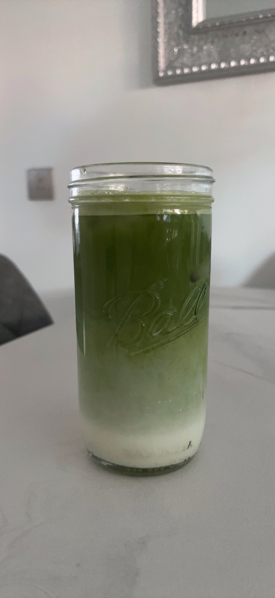

i'm someone who has had a longstandaing antipathy towards matcha lattes (this is mainly due to a terrible experience at a popular coffee branch that shall remain unamed).
last month, my best friend- a proud matcha girly, gifted me a vanilla matcha powder from teapsy.
i had already decided that mactha just wasn't for me so the powder went unopened for a good two weeks before i got bored enough to give it a try.
turns out i was wrong about the whole "matcha is gross" thing :( and the truth is that matcha lattes are amazing if made correctly.
so now i'm making it my mission to convince other matcha-haters like me to give it another go using my newly perfected iced vanilla matcha latte recipe!
